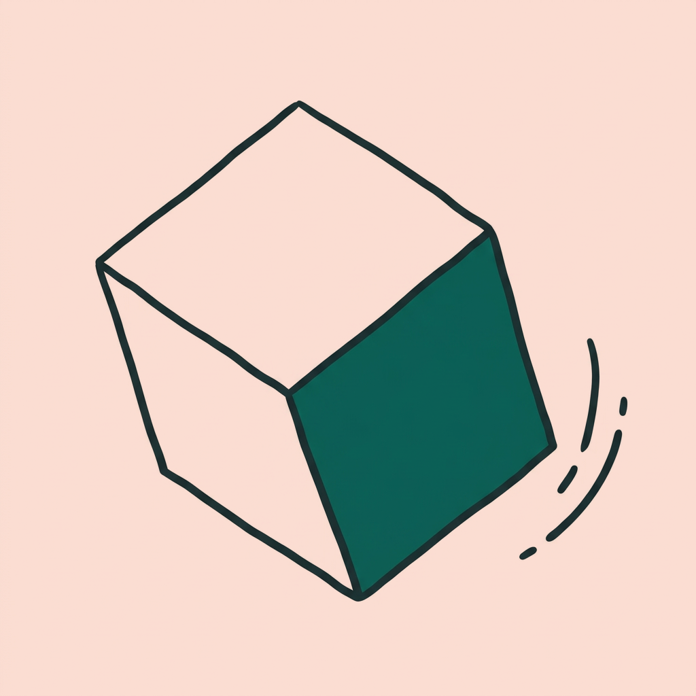
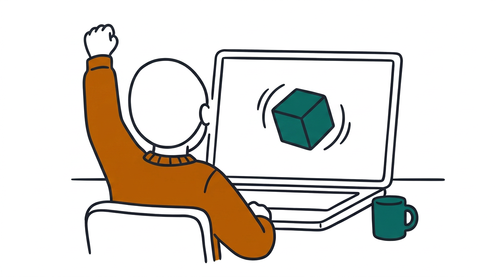

The cube that
wouldn't spin
Why WebGPU works (or doesn't)
on your Ubuntu desktop
Aishwarya Mathuria
Computer Scientist 2 | Adobe
Nishant Kumar Thakur
Senior Computer Scientist | Adobe
it started like this
We opened a spinning-cube demo. Nothing spun.
"requestAdapter returned null"
hands up when you spot yourself
Same page. Three laptops. Which one is yours?
"WebGPU not supported"fails loudly
Works... slowlyfails quietly
You usually can't tell which one you are. Today you will.
chapter 1
What was that page
asking for?
guess first: who wins?
Same job: fill the grid. Who wins?
CPU: a few clever workers
GPU: thousands of tiny ones
What is WebGPU?
Before
A web page could only draw simple things
Heavy work (games, AI) meant installing an app
With WebGPU
A web page can use your GPU
3D graphics and AI in a browser tab
No install.
How a web page reaches the GPU
Think of ordering at a restaurant. Somewhere on the way, our cube got lost.
→
→
Vulkan driverthe order system
→
Break a link and some browsers let the CPU "microwave" cook it instead. Slowly. No error.
chapter 2
The tempting way out
Guessing vs checking
Guessing
1. "WebGPU not supported"
2. Google the error
3. Paste a flag from an old forum post
4. Reinstall. Reboot.
5. Still broken. Blame the laptop.
Checking
1. Ask the laptop five questions (60 seconds)
2. Spot the one layer that's off
3. Fix that one thing, not everything
chapter 3
So we asked the laptop
how many have you run before?
Five questions to ask your laptop
1lspci -kyour GPU
2vulkaninfo --summaryyour Vulkan driver
3echo $XDG_SESSION_TYPEWayland or X11
4snap list | grep -i -E 'firefox|chromium'which browsers
5firefox --versionwhich build
Why it matters: browsers only switch WebGPU on for GPU and browser combinations they've tested.
demo 1 · the laptop answers
chapter 4 · the twist
We opened a
second browser
Two browsers. Two answers.
Same laptop. Same GPU. Both browsers are snaps.
Firefox
WebGPU works
The cube spins
Chromium
"requestAdapter returned null"
Chrome's guide lists a crashing graphics process as one cause. Ours crashes
Google Chrome as a .deb fails the same way, so it's not the snap
WebGPU uses Vulkan, but the rest of Chromium uses OpenGL. Best guess: that OpenGL ES 3.0 step fails here
Old habit: "my GPU is broken". New habit: "does a second browser work?"
chapter 5
Loaded is not the
same as working
demo 2 · is it really the GPU?
Real GPU: isFallbackAdapter: false · CPU pretending: true
epilogue
Back to the cube that wouldn't spin

In Firefox, it spins. Chromium is still an open case.
Stop guessing. Start checking.
Old you → new you
"My laptop is slow."→Which layer? Run the 5 commands.
Paste random flags→Find the layer that's off first.
"It loads, so it works."→Check isFallbackAdapter.
"This browser fails, so my GPU is broken."→Try a second browser first.